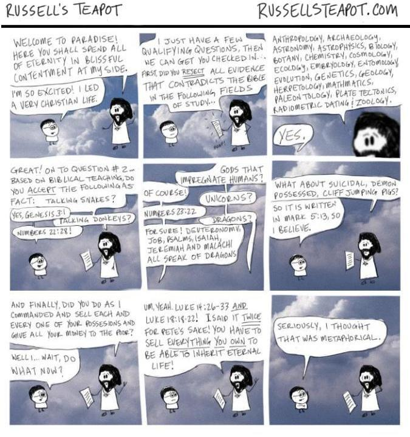
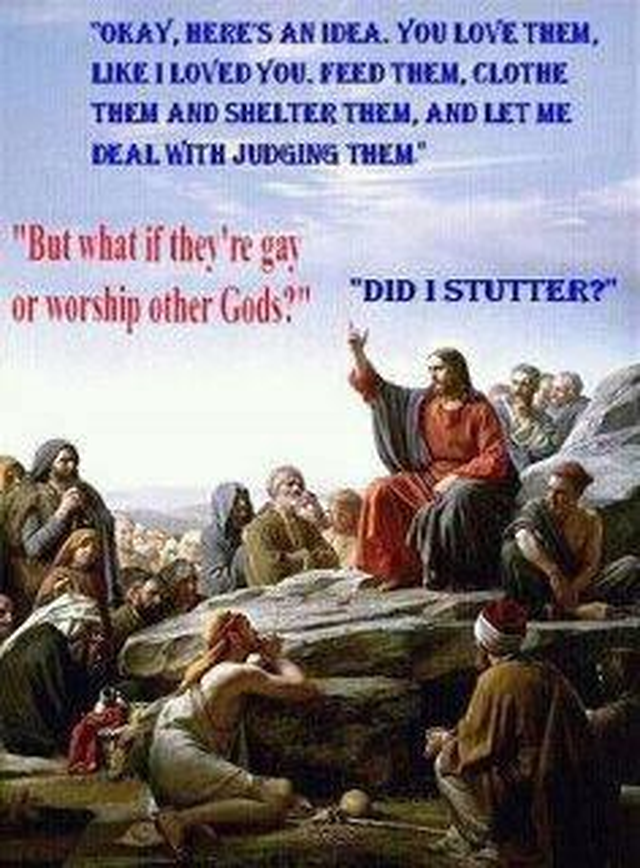

성서 - 어디까지가 은유이고 어디까지가 fact인가 ?
게시: 2017-09-10T14:29:24+09:00
기독교는 명실상부 현재 전세계 1위 종교로서, 전체 인구의 31%가 믿는 종교입니다. 2위인 이슬람 22%를 훨씬 뛰어넘는 숫자이고, 인구수로 밀어붙이는 힌두교 14%도 가뿐히 제압하는 숫자입니다.
저도 (열심히는 아니지만) 그래도 매주 교회에 나가고 성경도 가끔 읽습니다. 저 나름대로는 스스로를 기독교인이라고 생각합니다. 원래부터 기독교, 그 중에서도 개신교는 별의별 희한한 목사님과 신도들 덕분에 세간에 화제도 많이 뿌리고 비웃음도 많이 사는 종교입니다. 특히 최근에는 창조과학이니 요가를 금지해야 하느니 하는 사람들 덕분에 더욱 물의를 일으켰습니다. 우리나라에는 아직 별 큰 영향력이 없는데도 불구하고, 의외로 이슬람에 대한 적개심을 불태우며 이슬람이 국내에 발붙이지 못하게 하자는 선동도 있었습니다. 그러나 가장 큰 물의는 바로 동성애에 대한 공개적인 적대감을 노출하며 '차별 금지법'을 반대하는 모습을 보여주어 저를 비롯한 많은 상식적인 사람들을 실망시킨 부분이라고 저는 생각합니다.
어느 한가한 사람들이 세어보니, 하나님이 직접 죽이신 사람들의 수를 세어보면 성경에 명시적으로 나온 숫자만 세어도 2,821,364 명이고, 대략 추정치를 적용해보면 노아의 홍수 같은 재앙을 통해 대략 2천5백만명을 살해하셨다고 합니다.
또 하나님은 명시적으로 이스라엘인이 아닌 이민족에 대해 명시적으로 남녀노소 심지어 가축까지 모두 죽이라는 명령을 내릴 만큼 무시무시한 분이시기도 합니다.
사무엘상 15장 2절~3절
만군의 여호와께서 이같이 말씀하시기를 아말렉이 이스라엘에게 행한 일 곧 애굽에서 나올 때에 길에서 대적한 일로 내가 그들을 벌하노니
지금 가서 아말렉을 쳐서 그들의 모든 소유를 남기지 말고 진멸하되 남녀와 소아와 젖 먹는 아이와 우양과 낙타와 나귀를 죽이라 하셨나이다 하니
이런 무시무시한 신을 섬기는 종교가 어떻게 세계 제1의 종교가 되었을까요 ?
아시다시피 기독교는 유대교와는 많이 다릅니다. 흔히 유대교와 기독교의 차이는 예수님을 구주로 영접하느냐 하지 않느냐의 차이라고 합니다. 그리고 그게 맞을 겁니다. 저는 예전에 디씨인사이드 초장기 때부터 디씨 유저를 해왔고, 요즘은 잘 안 갑니다만 그래도 그 유쾌한 천박함과 얇팍함을 아직 소중히 간직하고 있습니다. 그 정신을 살려 유대교와 기독교의 정수를 1줄로 요약해보겠습니다.
유대교 : 여호와만이 유일신이시며, 유대민족만이 여호와께서 선택하신 민족이다.
기독교 : 닥치고 이웃사랑
실제로 예수님께서는 마가복음 12장 31절에서 이웃 사랑이 가장 큰 계명이라고 명시적으로도 말씀하셨습니다.
네 이웃을 네 자신과 같이 사랑하라 하신 것이라 이보다 더 큰 계명이 없느니라
피의 제물을 갈구하는 고대 유목민의 신(곡식을 바친 카인은 외면받고, 가축을 바친 아벨은 이쁨을 받았지요)을 섬기던 종교는 더 강대한 힘을 가진 주변 제국에게 이리 치이고 저리 치이면서 유대인을 멸망의 길로 이끌었습니다. 그러나 근본을 거기에 두었으나, 선민의식과 증오를 버리고 사랑을 외치신 예수님의 종교는 전세계에 널리 퍼졌지요.
저는 기독교가 사랑의 종교라고 믿습니다. 그렇게 사랑을 가르치는 성서에서 제가 가장 두려워하는 부분이 있습니다. 바로 아래 부분입니다.
마태복음 25장 41~45절
또 왼편에 있는 자들에게 이르시되 저주를 받은 자들아 나를 떠나 마귀와 그 사자들을 위하여 예비된 영원한 불에 들어가라
내가 주릴 때에 너희가 먹을 것을 주지 아니하였고 목마를 때에 마시게 하지 아니하였고
나그네 되었을 때에 영접하지 아니하였고 헐벗었을 때에 옷 입히지 아니하였고 병들었을 때와 옥에 갇혔을 때에 돌보지 아니하였느니라 하시니
그들도 대답하여 이르되 주여 우리가 어느 때에 주께서 주리신 것이나 목마르신 것이나 나그네 되신 것이나 헐벗으신 것이나 병드신 것이나 옥에 갇히신 것을 보고 공양하지 아니하더이까
이에 임금이 대답하여 이르시되 내가 진실로 너희에게 이르노니 이 지극히 작은 자 하나에게 하지 아니한 것이 곧 내게 하지 아니한 것이니라 하시리니
저는 이 윗 부분이 예수님 말씀의 핵심이라고 생각합니다. 바로 이웃에 대한 사랑이지요.
그러나 '일부' 목사님들과 신자들은 동성애자들을 핍박하고 차별하는 것이 예수님의 뜻을 세상에 펼치는 방법이라고 생각하는 것 같습니다. 실제로는 예수님께서는 동성애자들에 대해 뭐라 하신 적이 없습니다. 다만, 피에 굶주린 유목민의 신은 동성애자, 정확하게는 게이들을 증오하셨습니다. 반면에 레즈비언에 대해서는 아무 말씀 없으셨고, 또 동성애자 못지 않게 돼지고기와 장어, 홍합과 전복을 먹는 사람들을 증오하셨습니다. 또한 이 유목민들의 신은 남의 아내와 성적인 관계를 가지는 것을 극도로 싫어하셨습니다. 아래 구절을 보시지요.
레위기 11장 3절 ~ 10절
모든 짐승 중 굽이 갈라져 쪽발이 되고 새김질하는 것은 너희가 먹되
새김질하는 것이나 굽이 갈라진 짐승 중에도 너희가 먹지 못할 것은 이러하니 낙타는 새김질은 하되 굽이 갈라지지 아니하였으므로 너희에게 부정하고
사반도 새김질은 하되 굽이 갈라지지 아니하였으므로 너희에게 부정하고
토끼도 새김질은 하되 굽이 갈라지지 아니하였으므로 너희에게 부정하고
돼지는 굽이 갈라져 쪽발이로되 새김질을 못하므로 너희에게 부정하니
너희는 이러한 고기를 먹지 말고 그 주검도 만지지 말라 이것들은 너희에게 부정하니라
물에 있는 모든 것 중에서 너희가 먹을 만한 것은 이것이니 강과 바다와 다른 물에 있는 모든 것 중에서 지느러미와 비늘 있는 것은 너희가 먹되
물에서 움직이는 모든 것과 물에서 사는 모든 것 곧 강과 바다에 있는 것으로서 지느러미와 비늘 없는 모든 것은 너희에게 가증한 것이라
레위기 18장 20절
너는 네 이웃의 아내와 동침하여 설정하므로 그 여자와 함께 자기를 더럽히지 말지니라
레위기 18장 22절
너는 여자와 동침함 같이 남자와 동침하지 말라 이는 가증한 일이니
이렇게 고대 유목민의 신께서 돼지고기 및 장어 먹는 사람과 게이들을 똑같이 미워하셨는데 왜 예수님을 따르는 현대의 목사님과 신자들은 굳이 꼭 게이들을 미워하는지 모르겠습니다. 상식적으로 동성애자보다는 현대 도덕관념에도 매우 어긋나는 불륜남녀들이 훨씬 더 많쟎아요 ? 교회에서 차라리 기혼자들은 불륜하시면 안 됩니다 라는 캠페인이나 열심히 하는 것이 맞습니다. 거기에 레즈비언도 끼워넣어서 미워하는 이유도 잘 모르겠고요. 알고 보면 게이들만 미워하신 것이 아니라 레즈비언도 똑같이 미워하셨다면서 아래 구절을 찾아내 들이대는 분도 계십니다.
로마서 1장 26절~27절
이 때문에 하나님께서 그들을 부끄러운 욕심에 내버려 두셨으니 곧 그들의 여자들도 순리대로 쓸 것을 바꾸어 역리로 쓰며
그와 같이 남자들도 순리대로 여자 쓰기를 버리고 서로 향하여 음욕이 불 일듯 하매 남자가 남자와 더불어 부끄러운 일을 행하여 그들의 그릇됨에 상당한 보응을 그들 자신이 받았느니라
그러나 이는 바울의 말일 뿐, 예수님의 말씀은 아닙니다. 저는 기독교인이 아닌 사람은 상대로 하지 말라는 가르침은 예수님의 가르침이 아니라고 생각합니다. 예수님께서는 율법에 충실하느라 자신을 돕지 않는 제사장이나 레위인이 너의 이웃이 아니라, 비록 이단이더라도 착한 사마리아인이 너의 이웃이라고 말씀하셨습니다.
고대 유목민의 신, 즉 야훼의 가르침 중에도 좋은 것이 많습니다. 동성애자와 돼지고기 먹는 자들을 미워하는 부분만 있는 것이 아니라, 아래처럼 자유주의 경제학을 신봉한다는 현대의 수구꼴통들이 보면 '이거 완전히 종북 빨갱이네'라고 분노할 내용들도 많습니다. 즉, 지나친 효율성을 추구하여 가난한 자들의 소득을 깎아먹지 말라고 하셨고, 심지어 일용직 노동자의 임금 체불을 하지 말라는 구체적인 명령까지 내리셨습니다.
레위기 19장 9절
너희가 너희의 땅에서 곡식을 거둘 때에 너는 밭 모퉁이까지 다 거두지 말고 네 떨어진 이삭도 줍지 말며
네 포도원의 열매를 다 따지 말며 네 포도원에 떨어진 열매도 줍지 말고 가난한 사람과 거류민을 위하여 버려두라 나는 너희의 하나님 여호와이니라
레위기 19장 13절
너는 네 이웃을 억압하지 말며 착취하지 말며 품꾼의 삯을 아침까지 밤새도록 네게 두지 말며
마돈나(정확하게는 원곡자인 돈 맥클린)가 'Miss American Pie'라는 명곡에서 'Book of Live'라고 불렀을 만큼, 성서에는 사랑이 넘칩니다. 그런데 현대의 일부 목사님들과 신자들은 왜 굳이 그런 책 속에서 증오 부분을 찾아내 강요하는지 이해할 수가 없습니다.
지구 나이가 6천년이라고 주장하고, 동성애자들은 차별받아야 한다고 생각하시는 분들을 위해서는 다음 만화나 두어편 소개드립니다.

예수님 : 천국에 온 것을 환영하네 ! 여기서 자넨 내 옆 자리에서 축복이 가득한 만족감 속에서 영원을 보내게 될걸세.
신자 : 정말 신나요 ! 저는 매우 기독교적인 삶을 살았거든요.
예수님 : 몇가지 자격 심사 질문이 있을건데, 그 뒤에 자넬 체크인 시켜줌세... 먼저, 자넨 다음 학문 분야에 있어서 성경 내용에 반하는 모든 증거를 거부했는가 ?
예수님 : 그러니까 인류학, 고고학, 천문한, 천체물리학, 생물학, 식물학, 화학, 우주학, 생리학, 발생학, 곤충학, 진화학, 유전학, 지질학, 파충류학, 수학, 고생물학, 판구조론, 방사성 탄소 연대 측정, 동물학 말일세.
신자 : 그럼요 !
예수님 : 좋아 ! 2번 질문으로 넘어가네... 성경의 가르침에 따라, 자넨 다음 내용들을 사실로 받아들였는가 ? 말하는 뱀 ?
신자 : 예, 창세기 3장 1절이요.
예수님 : 말하는 당나귀 ?
신자 : 민수기 22장 28절 !
예수님 : 인간을 임신시키는 신들 ?
신자 : 물론이지요 !
예수님 : 유니콘 ?
신자 : 민수기 23장 22절
예수님 : 용 ?
신자 : 물론이지요 ! 신명기, 욥기, 시편, 이사야, 예레미야와 말라기 모두 용 이야기를 하는걸요 !
예수님 : 귀신이 들려 절벽에서 뛰어내리면서 자살하는 돼지는 ?
신자 : 마가복음 5장 13절에 씌여 있으니 믿지요.
예수님 : 마지막으로 내가 명한 대로 가진 것을 모두 팔아 가난한 사람들에게 주었는가 ?
신자 : 어... 잠깐만요, 뭘 하라고요 ?
예수님 : 어, 맞아. 누가복음 14장 26절에서 33절, 그리고 누가복음 18장 18절에서 22질에 써놓았는 걸 ! 네가 가진 것을 모두 팔아야 영생을 얻을 수 있다고 말이야.
신자 : 정말인데요, 전 그게 다 은유적 말씀이라고 생각했지 말입니다.

예수님 : 오케이. 내가 하나 알려줄게. 내가 너희를 사랑하는 것처럼, 너희도 그들을 사랑해라. 그들을 먹이고 입히고 재워주라고. 그러면 그들을 심판하는 건 그냥 내가 알아서 할게.
신자 : 하지만 그들이 게이거나 다른 신을 믿는 사람들이면 어떻게 하나요 ?
예수님 : 내가 말 더듬었니 ? (= 아놔, 말 진짜 못 알아듣네)